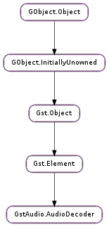

| allocate_output_buffer(size) | |
| finish_frame(buf, frames) | |
| get_allocator() | |
| get_audio_info() | |
| get_delay() | |
| get_drainable() | |
| get_estimate_rate() | |
| get_latency() | |
| get_max_errors() | |
| get_min_latency() | |
| get_needs_format() | |
| get_parse_state(sync, eos) | |
| get_plc() | |
| get_plc_aware() | |
| get_tolerance() | |
| merge_tags(tags, mode) | |
| negotiate() | |
| set_drainable(enabled) | |
| set_estimate_rate(enabled) | |
| set_latency(min, max) | |
| set_max_errors(num) | |
| set_min_latency(num) | |
| set_needs_format(enabled) | |
| set_output_format(info) | |
| set_plc(enabled) | |
| set_plc_aware(plc) | |
| set_tolerance(tolerance) |
| Name | Type | Flags | Description |
|---|---|---|---|
| min-latency | int | r/w | Aggregate output data to a minimum of latency time (ns) |
| plc | bool | r/w | Perform packet loss concealment (if supported) |
| tolerance | int | r/w | Perfect ts while timestamp jitter/imperfection within tolerance (ns) |
None
| Name | Type | Access |
|---|---|---|
| element | Gst.Element | r |
| input_segment | Gst.Segment | r |
| output_segment | Gst.Segment | r |
| sinkpad | Gst.Pad | r |
| srcpad | Gst.Pad | r |
| stream_lock | GLib.RecMutex | r |
Bases: Gst.Element
This base class is for audio decoders turning encoded data into raw audio samples.
GstAudio.AudioDecoder and subclass should cooperate as follows.
Initially, GstAudio.AudioDecoder calls start when the decoder element is activated, which allows subclass to perform any global setup. Base class (context) parameters can already be set according to subclass capabilities (or possibly upon receive more information in subsequent set_format ).
GstAudio.AudioDecoder calls set_format to inform subclass of the format of input audio data that it is about to receive. While unlikely, it might be called more than once, if changing input parameters require reconfiguration.
GstAudio.AudioDecoder calls stop at end of all processing.
As of configuration stage, and throughout processing, GstAudio.AudioDecoder provides various (context) parameters, e.g. describing the format of output audio data (valid when output caps have been set) or current parsing state. Conversely, subclass can and should configure context to inform base class of its expectation w.r.t. buffer handling.
Base class gathers input data, and optionally allows subclass to parse this into subsequently manageable (as defined by subclass) chunks. Such chunks are subsequently referred to as ‘frames’, though they may or may not correspond to 1 (or more) audio format frame.
Input frame is provided to subclass’ handle_frame.
If codec processing results in decoded data, subclass should call gst_audio_decoder_finish_frame to have decoded data pushed downstream.
Just prior to actually pushing a buffer downstream, it is passed to pre_push. Subclass should either use this callback to arrange for additional downstream pushing or otherwise ensure such custom pushing occurs after at least a method call has finished since setting src pad caps.
During the parsing process GstAudio.AudioDecoderClass will handle both srcpad and sinkpad events. Sink events will be passed to subclass if event callback has been provided.
GstAudio.AudioDecoder class calls stop to inform the subclass that data parsing will be stopped.
Subclass is responsible for providing pad template caps for source and sink pads. The pads need to be named “sink” and “src”. It also needs to set the fixed caps on srcpad, when the format is ensured. This is typically when base class calls subclass’ set_format function, though it might be delayed until calling gst_audio_decoder_finish_frame.
In summary, above process should have subclass concentrating on codec data processing while leaving other matters to base class, such as most notably timestamp handling. While it may exert more control in this area (see e.g. pre_push ), it is very much not recommended.
In particular, base class will try to arrange for perfect output timestamps as much as possible while tracking upstream timestamps. To this end, if deviation between the next ideal expected perfect timestamp and upstream exceeds GstAudio.AudioDecoder :tolerance, then resync to upstream occurs (which would happen always if the tolerance mechanism is disabled).
In non-live pipelines, baseclass can also (configurably) arrange for output buffer aggregation which may help to redue large(r) numbers of small(er) buffers being pushed and processed downstream.
On the other hand, it should be noted that baseclass only provides limited seeking support (upon explicit subclass request), as full-fledged support should rather be left to upstream demuxer, parser or alike. This simple approach caters for seeking and duration reporting using estimated input bitrates.
Things that subclass need to take care of:
| Parameters: | size (int) – size of the buffer |
|---|---|
| Returns: | allocated buffer |
| Return type: | Gst.Buffer |
Helper function that allocates a buffer to hold an audio frame for dec ‘s current output format.
| Parameters: |
|
|---|---|
| Returns: | a Gst.FlowReturn that should be escalated to caller (of caller) |
| Return type: |
Collects decoded data and pushes it downstream.
buf may be None in which case the indicated number of frames are discarded and considered to have produced no output (e.g. lead-in or setup frames). Otherwise, source pad caps must be set when it is called with valid data in buf.
Note that a frame received in gst_audio_decoder_handle_frame() may be invalidated by a call to this function.
| Return type: | allocator: Gst.Allocator, params: Gst.AllocationParams |
|---|
Lets GstAudio.AudioDecoder sub-classes to know the memory allocator used by the base class and its params.
Unref the allocator after use it.
| Returns: | a GstAudio.AudioInfo describing the input audio format |
|---|---|
| Return type: | GstAudio.AudioInfo |
| Returns: | True if drainable handling is enabled. MT safe. |
|---|---|
| Return type: | bool |
Queries decoder drain handling.
| Return type: | min: int, max: int |
|---|
Sets the variables pointed to by min and max to the currently configured latency.
| Returns: | aggregation latency. MT safe. |
|---|---|
| Return type: | int |
Queries decoder’s latency aggregation.
| Returns: | True if required format handling is enabled. MT safe. |
|---|---|
| Return type: | bool |
Queries decoder required format handling.
| Parameters: |
|---|
Return current parsing (sync and eos) state.
| Returns: | True if packet loss concealment is enabled. MT safe. |
|---|---|
| Return type: | bool |
Queries decoder packet loss concealment handling.
| Returns: | decoder audio jitter tolerance threshold. MT safe. |
|---|---|
| Return type: | int |
Queries current audio jitter tolerance threshold.
| Parameters: |
|
|---|
Adds tags to so-called pending tags, which will be processed before pushing out data downstream.
Note that this is provided for convenience, and the subclass is not required to use this and can still do tag handling on its own, although it should be aware that baseclass already takes care of the usual CODEC/AUDIO_CODEC tags.
MT safe.
| Returns: | True if the negotiation succeeded, else False. |
|---|---|
| Return type: | bool |
Negotiate with downstreame elements to currently configured GstAudio.AudioInfo.
| Parameters: | enabled (bool) – new state |
|---|
Configures decoder drain handling. If drainable, subclass might be handed a None buffer to have it return any leftover decoded data. Otherwise, it is not considered so capable and will only ever be passed real data.
MT safe.
| Parameters: | enabled (bool) – whether to enable byte to time conversion |
|---|
Allows baseclass to perform byte to time estimated conversion.
| Parameters: |
|---|
Sets decoder latency.
| Parameters: | num (int) – max tolerated errors |
|---|
Sets numbers of tolerated decoder errors, where a tolerated one is then only warned about, but more than tolerated will lead to fatal error. Default is set to GstAudio.AUDIO_DECODER_MAX_ERRORS.
| Parameters: | num (int) – new minimum latency |
|---|
Sets decoder minimum aggregation latency.
MT safe.
| Parameters: | enabled (bool) – new state |
|---|
Configures decoder format needs. If enabled, subclass needs to be negotiated with format caps before it can process any data. It will then never be handed any data before it has been configured. Otherwise, it might be handed data without having been configured and is then expected being able to do so either by default or based on the input data.
MT safe.
| Parameters: | info (GstAudio.AudioInfo) – GstAudio.AudioInfo |
|---|---|
| Returns: | True on success. |
| Return type: | bool |
Configure output info on the srcpad of dec.
| Parameters: | enabled (bool) – new state |
|---|
Enable or disable decoder packet loss concealment, provided subclass and codec are capable and allow handling plc.
MT safe.